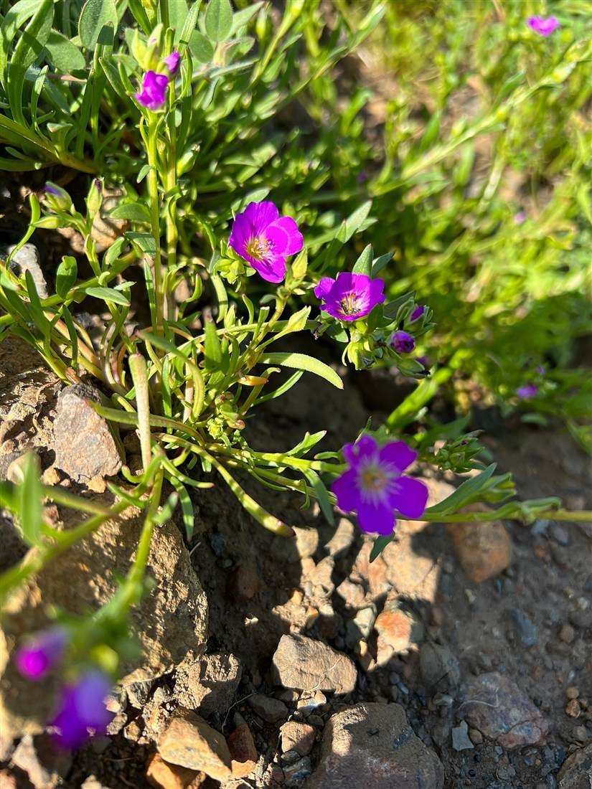

店のこと
店のこと
お店について確認できているのは、所在地とInstagramのアカウントだけです。
このページの「想像してみる」部分は、制作側が想像して書いたものです。お店の実際の様子・考え・メニューとは関係がありません。
確認できていること
- 店名は「Lily」、業種はカフェ
- 所在地は岩手県久慈市中央4丁目31-1(〒028-0041)
- Instagramのアカウントは lily_sweet_2002
- 電話番号はなし。連絡はInstagramから
- 営業時間・定休日・メニュー・価格・ご予約・駐車場は準備中

想像してみる
「Lily」という名前から
由来は分かりません。制作側は、ユリの花のように、すっと背筋の伸びた静かな時間を過ごせる店かもしれない、と想像しました。たとえば窓辺の席で、ゆっくり温かい飲み物を味わう。そんな時間を思い浮かべています(実際のお店の姿ではありません)。
なお、ユリの花を連想したのは制作側の個人的な連想です。お店の名前の由来や、店内の装飾・提供内容とは関係ありません。